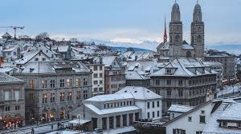
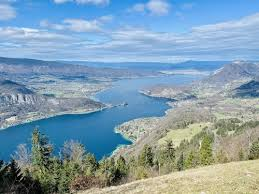
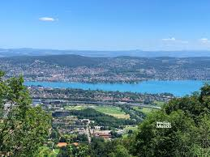
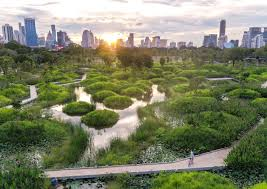
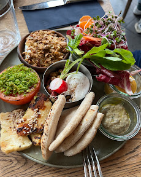
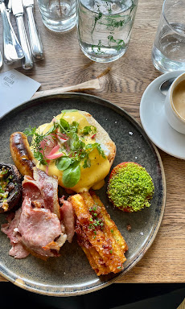

Zurique é considerada uma das cidades mais sustentáveis do mundo. A cidade possui transporte público eficiente, grande preservação de áreas verdes e uso de energia limpa.

Centro histórico de Zurique com arquitetura medieval preservada.

Lago de Zurique com paisagens naturais e trilhas.

Montanha Uetliberg com trilhas e vista panorâmica da cidade.

Parques urbanos preservados que fazem parte do planejamento sustentável.

Restaurantes com culinária suíça tradicional.

Restaurantes com ingredientes locais e orgânicos.